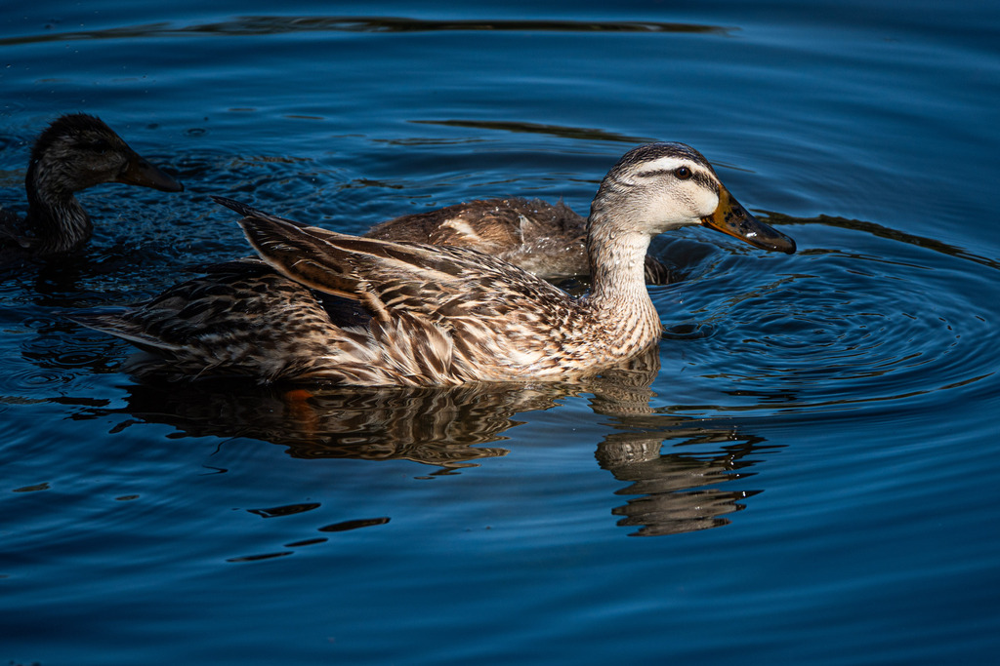

- The mottled duck is Florida's own duck — a subspecies found almost nowhere else, living in the state's marshes and ponds all year long.
- Unlike most ducks, it does not migrate; it is a true Florida resident, hatched, raised, and living out its life within the state.
- Males and females look alike — warm mottled brown — so the easiest way to tell them apart is the bill: yellow-green on the male, orange-and-dark on the female.
- Its biggest threat is an unexpected one: interbreeding with released domestic mallards, which is slowly diluting the wild Florida population.
Both sexes are warm, mottled brown overall, with a slightly paler, plainer head and neck and a darker body.
Male's is olive-green to yellow; female's is orange with dark blotches.
Shows a blue-purple wing patch (speculum), usually without the bold white borders a female mallard shows.
The female gives a mallard-like quack; the male a quieter, raspier call.
A brown duck that looks a bit like a female mallard but with a plainer, lighter head. Check the bill color to tell the sexes apart. Birds showing odd patches of white, a curled tail feather, or a hint of green on the head are likely mallard hybrids, not pure mottled ducks.
About 40 percent animal matter — insects, snails, small fish, and crayfish — and 60 percent plant matter, including the seeds, stems, and roots of marsh plants. Feeds by dabbling and tipping up in shallow water.
On and around the ponds, often in pairs. Look for a plain-headed brown duck; check the bill color and watch for hybrid traits.
Year-round resident — one of the few ducks you can count on in Florida in any season. Most likely to be seen on the open ponds.
We love all ducks — but local ponds stay healthiest when domestic mallards don't mix with our wild, non-migratory mottled ducks. Please don't feed the ducks (bread and snacks harm their health and encourage the very mallard releases that threaten this species), and never release pet or feed-store mallards, which is both harmful and illegal in Florida.


- © Rob Carr (CC-BY-NC), via iNaturalist
- © Cole Guyton (CC-BY-NC), via iNaturalist